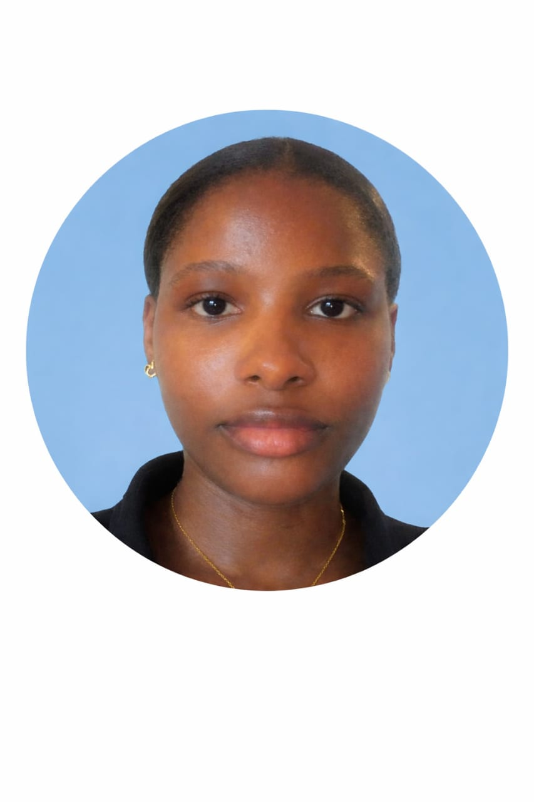

|
 |
EZEOBI MERCY CHIMFURUMNANYAFRONTEND DEVELOPER📍: Lagos, Nigeria |
Passionate and detail-oriented Frontend Developer with hands-on experience building responsive websites usin HTML, CSS and JavaScript. Eager to contribute to real world projects and grow in a collaborative environment.
Built a fully responsive login page with form validation using HTML and CSS.
Designed and developed a personal portfolio website to showcase projects and skills.
B.A in Theatre and Film Studies.
Nnamdi Azikiwe University, Awka, Anambra State | 2020-2024